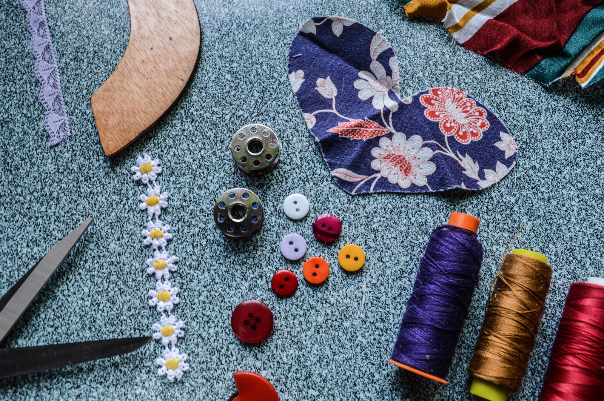

Tendência Sustentável: Moda Reciclada em Alta 🌱👗
03 de Fevereiro de 2026
Nos últimos anos, a moda tem passado por uma verdadeira revolução. Se antes o luxo era associado ao consumo desenfreado e às coleções que mudavam a cada estação, hoje o conceito de estilo está cada vez mais ligado à consciência ambiental. Nesse cenário, a moda reciclada surge como protagonista, mostrando que é possível unir criatividade, elegância e responsabilidade socioambiental. O que é moda reciclada? Reaproveitamento de tecidos: peças confeccionadas a partir de sobras de produção, roupas antigas ou materiais descartados. Upcycling: transformar algo considerado sem valor em uma peça única e cheia de estilo. Produção consciente: marcas que reduzem o desperdício e repensam seus processos para minimizar impactos ambientais. Por que essa tendência está em alta? Consciência ambiental: consumidores estão cada vez mais atentos ao impacto da indústria da moda, uma das mais poluentes do mundo. Exclusividade: cada peça reciclada carrega uma história e se torna única, diferente da produção em massa. Valorização da criatividade: estilistas e artesãos encontram novas formas de trabalhar tecidos e materiais, criando coleções inovadoras. Economia circular: prolongar o ciclo de vida dos produtos evita que toneladas de resíduos acabem em aterros sanitários. Moda reciclada nas passarelas O que antes era visto como alternativo ou artesanal, hoje conquista espaço em grandes desfiles internacionais. Marcas renomadas já apresentam coleções feitas com tecidos reaproveitados, provando que sustentabilidade e sofisticação podem andar lado a lado. O resultado são peças modernas, cheias de personalidade e que carregam uma mensagem poderosa: a moda pode ser bonita sem agredir o planeta. O impacto no consumidor. Mudança de mentalidade: comprar deixou de ser apenas um ato de consumo e passou a ser uma escolha ética. Orgulho de vestir: usar uma peça reciclada é também um posicionamento, uma forma de mostrar ao mundo que estilo e consciência caminham juntos. Acessibilidade: além das grandes marcas, pequenos empreendedores e brechós têm se destacado, tornando a moda sustentável mais próxima do público. Conclusão A moda reciclada não é apenas uma tendência passageira, mas um movimento que reflete os novos valores da sociedade. Ao reaproveitar tecidos e transformar resíduos em peças de desejo, ela nos lembra que o futuro da moda depende de escolhas conscientes. Mais do que vestir, trata-se de expressar quem somos e o mundo que queremos construir.